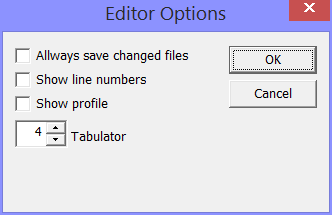

You reach the MMIX editor options through the Options menu.
If this box is checked, the edit window will display line numbers (in black) in the left margin.
If this box is checked, the edit window will display a Profile in the left margin. The profile shows (in blue) for each line how often it was executed .
With this control you can set size of the tabulator. For example, setting it to eight means that one tabulator takes up the same space as eight ordinary characters.